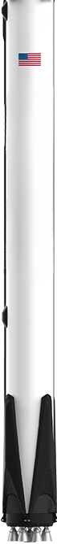
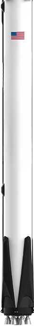

Nimbus 1 - 7

Nimbus 1, the first in a series of second-generation meteorological research-and-development satellites, which were designed to serve as a stabilized, earth-oriented platform which tests collects data on weather, space radiation and other things.
An unplanned eccentric orbit resulted from a brief second-stage burn. Aside from that, the spacecraft and its experiments ran smoothly until September 22, 1964. Because the solar paddles became locked in place, there was insufficient electrical power to continue operations.
• 00872
• Nimbus-A
• Nimbus1
• Launch Date/Time: 1964-08-28T08:52:00Z
• Launch Vehicle: Thrust Augmented Thor-Agena B
• Launch Site: Vandenberg AFB, United States
• Decay Date: 1974-05-16
• Mass: 374.4 kg
Nimbus 3, the third in a series of second-generation meteorological research-and-development satellites, was designed to serve as a stabilized, earth-oriented platform for the testing of advanced meteorological sensor systems and the collecting of meteorological data.
Nimbus 3 was successful and ran normally until the IRIS experiment failed on July 22, 1969. On January 25, 1970, and June 21, 1970, the HRIR and SIRS experiments were terminated, respectively. The remaining experiments ran until September 25, 1970, when the rear horizon scanner broke down. It was impossible to maintain proper spacecraft attitude without this horizon scanner, rendering most experimental observations useless. On January 22, 1972, all spacecraft operations came to an end.
• 03890
• Nimbus-B2
• Nimbus3
• Launch Date: 1969-04-14
• Launch Vehicle: Thor-Agena B
• Launch Site: Vandenberg AFB, United States
• Decay Date: 1974-05-16
• Mass: 575.6 kg
The Nimbus 5 research-and-development satellite was designed to serve as a stabilized, earth-oriented platform for the testing of advanced meteorological sensor systems and collecting meteorological and geological data on a global scale.
• PL-721B
• Nimbus-E
• Nimbus5
• Launch Date: 1972-12-11
• Launch Vehicle: Delta
• Launch Site: Vandenberg AFB, United States
• Decay Date: 1974-05-16
• Mass: 770 kg
The Nimbus 7 research-and-development satellite served as a stabilized, earth-oriented platform for the testing of advanced systems for sensing and collecting data in the pollution, oceanographic and meteorological disciplines.
• 11080
• Nimbus-G
• Nimbus7
• Launch Date: 1978-10-24
• Launch Vehicle: Delta
• Launch Site: Vandenberg AFB, United States
• Nominal Power: 300 W
• Mass: 832 kg

 


Nimbus 2, the second in a series of second-generation meteorological research-and-development satellites, was designed to serve as a stabilized, earth-oriented platform for the testing of advanced meteorological sensor systems and the collecting of meteorological data.
After launch, the spacecraft and experiments operated normally until July 26, 1966, when the spacecraft tape recorder failed. The HRIR tape recorder took over its function until November 15, 1966, when it also failed. Some real-time data were collected until the spacecraft mission was terminated on January 17, 1969, due to deterioration of the horizon scanner used for earth reference.
• 02173
• Nimbus-C
• Nimbus2
• Launch Date: 1966-05-15
• Launch Vehicle: Thrust Augmented Thor-Agena D
• Launch Site: Vandenberg AFB, United States
• Mass: 413.7 kg
Nimbus 4, the fourth in a series of second-generation meteorological research-and-development satellites, was designed to serve as a stabilized, earth-oriented platform for the testing of advanced meteorological sensor systems, and for collecting meteorological data.
The spacecraft performed admirably until April 14, 1971, when attitude issues arose. After that, the experiments ran for a limited time until September 30, 1980.
• 04362
• Nimbus-D
• Nimbus4
• Launch Date: 1970-04-08
• Launch Vehicle: Thor-Agena D
• Launch Site: Vandenberg AFB, United States
• Mass: 619.6 kg

The Nimbus 6 is a research and development satellite that served as a platform for testing advanced systems, sensing and detecting natural disasters an other weather related data. With the help of highly sophisticated sensors, its possible to map the troposphere temperature (the lowest region of the atmosphere) , ozone, and water vapour, transmit real-time data to a geostationary spacecraft (ATS 6),
• 07924
• Nimbus-F
• Nimbus6
• Launch Date: 1975-06-12
• Launch Vehicle: Delta
• Launch Site: Vandenberg AFB, United States
• Mass: 585 kg